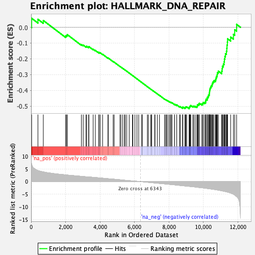
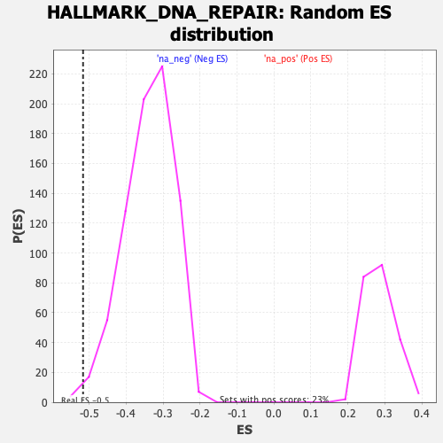

| | | Dataset | DE_t |
| Phenotype | NoPhenotypeAvailable |
| Upregulated in class | na_neg |
| GeneSet | HALLMARK_DNA_REPAIR |
| Enrichment Score (ES) | -0.51649463 |
| Normalized Enrichment Score (NES) | -1.524375 |
| Nominal p-value | 0.006459948 |
| FDR q-value | 0.018930135 |
| FWER p-Value | 0.257 |
Table: GSEA Results Summary

Fig 1: Enrichment plot: HALLMARK_DNA_REPAIR
Profile of the Running ES Score & Positions of GeneSet Members on the Rank Ordered List
| SYMBOL | RANK IN GENE LIST | RANK METRIC SCORE | RUNNING ES | CORE ENRICHMENT | | 1 | NPR2 | 31 | 6.915 | 0.0571 | No |
| 2 | CDA | 396 | 4.381 | 0.0508 | No |
| 3 | ADCY6 | 708 | 3.829 | 0.0432 | No |
| 4 | PDE4B | 2001 | 2.661 | -0.0554 | No |
| 5 | XPC | 2055 | 2.621 | -0.0512 | No |
| 6 | TAF13 | 2101 | 2.584 | -0.0466 | No |
| 7 | ERCC2 | 2920 | 2.085 | -0.1092 | No |
| 8 | ELL | 3025 | 2.016 | -0.1128 | No |
| 9 | TK2 | 3188 | 1.911 | -0.1217 | No |
| 10 | ERCC8 | 3229 | 1.890 | -0.1206 | No |
| 11 | ERCC4 | 3345 | 1.830 | -0.1259 | No |
| 12 | AK1 | 3351 | 1.827 | -0.1222 | No |
| 13 | DCTN4 | 3603 | 1.681 | -0.1395 | No |
| 14 | SMAD5 | 3729 | 1.617 | -0.1467 | No |
| 15 | TAF1C | 3936 | 1.489 | -0.1610 | No |
| 16 | ERCC1 | 3942 | 1.483 | -0.1587 | No |
| 17 | REV3L | 4018 | 1.424 | -0.1624 | No |
| 18 | AGO4 | 4151 | 1.345 | -0.1711 | No |
| 19 | POLR2A | 4464 | 1.146 | -0.1954 | No |
| 20 | GTF2H1 | 4478 | 1.134 | -0.1949 | No |
| 21 | RNMT | 4764 | 0.978 | -0.2174 | No |
| 22 | POLR2C | 4822 | 0.941 | -0.2210 | No |
| 23 | TP53 | 5160 | 0.722 | -0.2484 | No |
| 24 | BRF2 | 5218 | 0.675 | -0.2526 | No |
| 25 | GTF3C5 | 5318 | 0.609 | -0.2604 | No |
| 26 | EIF1B | 5418 | 0.540 | -0.2682 | No |
| 27 | PDE6G | 5464 | 0.514 | -0.2716 | No |
| 28 | POLA1 | 5553 | 0.463 | -0.2787 | No |
| 29 | PRIM1 | 5697 | 0.368 | -0.2904 | No |
| 30 | POLR3C | 5885 | 0.266 | -0.3059 | No |
| 31 | TAF12 | 5912 | 0.250 | -0.3079 | No |
| 32 | SDCBP | 6029 | 0.187 | -0.3175 | No |
| 33 | DDB2 | 6146 | 0.120 | -0.3272 | No |
| 34 | POLR2D | 6247 | 0.060 | -0.3355 | No |
| 35 | TAF9 | 6429 | -0.050 | -0.3505 | No |
| 36 | AAAS | 6439 | -0.056 | -0.3513 | No |
| 37 | SUPT4H1 | 6440 | -0.058 | -0.3513 | No |
| 38 | ADA | 6452 | -0.066 | -0.3522 | No |
| 39 | ERCC5 | 6751 | -0.262 | -0.3769 | No |
| 40 | TAF6 | 6808 | -0.299 | -0.3814 | No |
| 41 | NUDT9 | 6948 | -0.385 | -0.3928 | No |
| 42 | RPA2 | 6991 | -0.409 | -0.3961 | No |
| 43 | POLL | 7004 | -0.421 | -0.3968 | No |
| 44 | MPC2 | 7175 | -0.551 | -0.4106 | No |
| 45 | POM121 | 7196 | -0.565 | -0.4119 | No |
| 46 | ERCC3 | 7327 | -0.642 | -0.4222 | No |
| 47 | POLH | 7454 | -0.721 | -0.4320 | No |
| 48 | RAD52 | 7749 | -0.907 | -0.4554 | No |
| 49 | GTF2B | 7806 | -0.946 | -0.4589 | No |
| 50 | NELFB | 7870 | -0.985 | -0.4630 | No |
| 51 | GTF2A2 | 7899 | -1.007 | -0.4640 | No |
| 52 | NME4 | 7992 | -1.072 | -0.4703 | No |
| 53 | DGCR8 | 8057 | -1.121 | -0.4740 | No |
| 54 | USP11 | 8120 | -1.164 | -0.4775 | No |
| 55 | NFX1 | 8129 | -1.167 | -0.4764 | No |
| 56 | DGUOK | 8182 | -1.197 | -0.4790 | No |
| 57 | VPS37B | 8333 | -1.295 | -0.4894 | No |
| 58 | SRSF6 | 8337 | -1.297 | -0.4875 | No |
| 59 | NT5C | 8455 | -1.397 | -0.4948 | No |
| 60 | SNAPC5 | 8456 | -1.398 | -0.4924 | No |
| 61 | UPF3B | 8626 | -1.508 | -0.5036 | No |
| 62 | IMPDH2 | 8656 | -1.521 | -0.5031 | No |
| 63 | SUPT5H | 8798 | -1.632 | -0.5115 | No |
| 64 | PNP | 8805 | -1.640 | -0.5086 | No |
| 65 | SNAPC4 | 8813 | -1.646 | -0.5058 | No |
| 66 | NELFE | 8932 | -1.725 | -0.5119 | No |
| 67 | POLB | 8941 | -1.732 | -0.5089 | No |
| 68 | RPA3 | 8978 | -1.751 | -0.5080 | No |
| 69 | POLR1D | 8990 | -1.763 | -0.5051 | No |
| 70 | POLR2F | 9036 | -1.798 | -0.5048 | No |
| 71 | CSTF3 | 9178 | -1.892 | -0.5120 | Yes |
| 72 | GTF2H3 | 9187 | -1.896 | -0.5082 | Yes |
| 73 | POLD1 | 9208 | -1.912 | -0.5053 | Yes |
| 74 | MRPL40 | 9220 | -1.921 | -0.5016 | Yes |
| 75 | TSG101 | 9247 | -1.935 | -0.4991 | Yes |
| 76 | RFC5 | 9270 | -1.952 | -0.4962 | Yes |
| 77 | MPG | 9391 | -2.035 | -0.5010 | Yes |
| 78 | CLP1 | 9445 | -2.073 | -0.5000 | Yes |
| 79 | CANT1 | 9529 | -2.137 | -0.5012 | Yes |
| 80 | RAE1 | 9626 | -2.222 | -0.5031 | Yes |
| 81 | NUDT21 | 9652 | -2.245 | -0.4989 | Yes |
| 82 | GTF2H5 | 9653 | -2.246 | -0.4926 | Yes |
| 83 | POLR1C | 9699 | -2.285 | -0.4898 | Yes |
| 84 | TARBP2 | 9749 | -2.325 | -0.4871 | Yes |
| 85 | POLA2 | 9766 | -2.339 | -0.4816 | Yes |
| 86 | GUK1 | 9911 | -2.440 | -0.4862 | Yes |
| 87 | RAD51 | 9975 | -2.497 | -0.4836 | Yes |
| 88 | NME3 | 9988 | -2.506 | -0.4768 | Yes |
| 89 | TAF10 | 10081 | -2.585 | -0.4761 | Yes |
| 90 | DAD1 | 10136 | -2.636 | -0.4719 | Yes |
| 91 | POLD3 | 10140 | -2.639 | -0.4635 | Yes |
| 92 | POLR2E | 10158 | -2.653 | -0.4561 | Yes |
| 93 | RFC2 | 10228 | -2.721 | -0.4526 | Yes |
| 94 | TYMS | 10232 | -2.723 | -0.4436 | Yes |
| 95 | NELFCD | 10284 | -2.770 | -0.4383 | Yes |
| 96 | UMPS | 10299 | -2.783 | -0.4298 | Yes |
| 97 | DUT | 10344 | -2.821 | -0.4235 | Yes |
| 98 | SURF1 | 10352 | -2.828 | -0.4141 | Yes |
| 99 | POLR2I | 10364 | -2.839 | -0.4050 | Yes |
| 100 | RALA | 10373 | -2.848 | -0.3955 | Yes |
| 101 | GMPR2 | 10392 | -2.872 | -0.3867 | Yes |
| 102 | CCNO | 10427 | -2.910 | -0.3790 | Yes |
| 103 | RFC3 | 10456 | -2.931 | -0.3706 | Yes |
| 104 | SEC61A1 | 10509 | -2.986 | -0.3638 | Yes |
| 105 | APRT | 10531 | -3.009 | -0.3542 | Yes |
| 106 | CETN2 | 10566 | -3.041 | -0.3455 | Yes |
| 107 | RFC4 | 10621 | -3.101 | -0.3380 | Yes |
| 108 | POLR2G | 10707 | -3.191 | -0.3324 | Yes |
| 109 | LIG1 | 10733 | -3.213 | -0.3216 | Yes |
| 110 | NCBP2 | 10762 | -3.253 | -0.3107 | Yes |
| 111 | DDB1 | 10802 | -3.298 | -0.3004 | Yes |
| 112 | POLD4 | 10817 | -3.315 | -0.2878 | Yes |
| 113 | GPX4 | 10871 | -3.373 | -0.2780 | Yes |
| 114 | TMED2 | 11068 | -3.648 | -0.2777 | Yes |
| 115 | EDF1 | 11093 | -3.674 | -0.2628 | Yes |
| 116 | PCNA | 11107 | -3.693 | -0.2469 | Yes |
| 117 | SAC3D1 | 11164 | -3.773 | -0.2338 | Yes |
| 118 | BCAM | 11208 | -3.845 | -0.2189 | Yes |
| 119 | HPRT1 | 11224 | -3.860 | -0.2016 | Yes |
| 120 | ADRM1 | 11251 | -3.899 | -0.1848 | Yes |
| 121 | ARL6IP1 | 11284 | -3.946 | -0.1680 | Yes |
| 122 | SSRP1 | 11341 | -4.040 | -0.1523 | Yes |
| 123 | FEN1 | 11365 | -4.085 | -0.1334 | Yes |
| 124 | POLR2H | 11375 | -4.098 | -0.1132 | Yes |
| 125 | ZWINT | 11397 | -4.141 | -0.0935 | Yes |
| 126 | VPS28 | 11406 | -4.160 | -0.0726 | Yes |
| 127 | BCAP31 | 11587 | -4.512 | -0.0622 | Yes |
| 128 | ITPA | 11748 | -4.985 | -0.0445 | Yes |
| 129 | POLR2K | 11821 | -5.291 | -0.0155 | Yes |
| 130 | STX3 | 11933 | -5.890 | 0.0185 | Yes |
Table: GSEA details [plain text format]

Fig 2: HALLMARK_DNA_REPAIR: Random ES distribution
Gene set null distribution of ES for HALLMARK_DNA_REPAIR